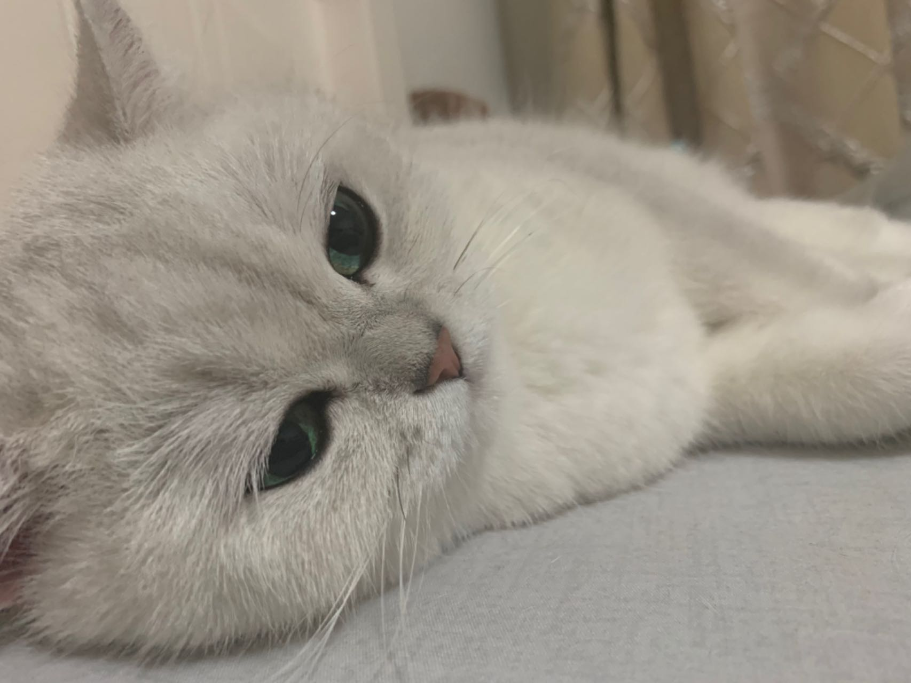
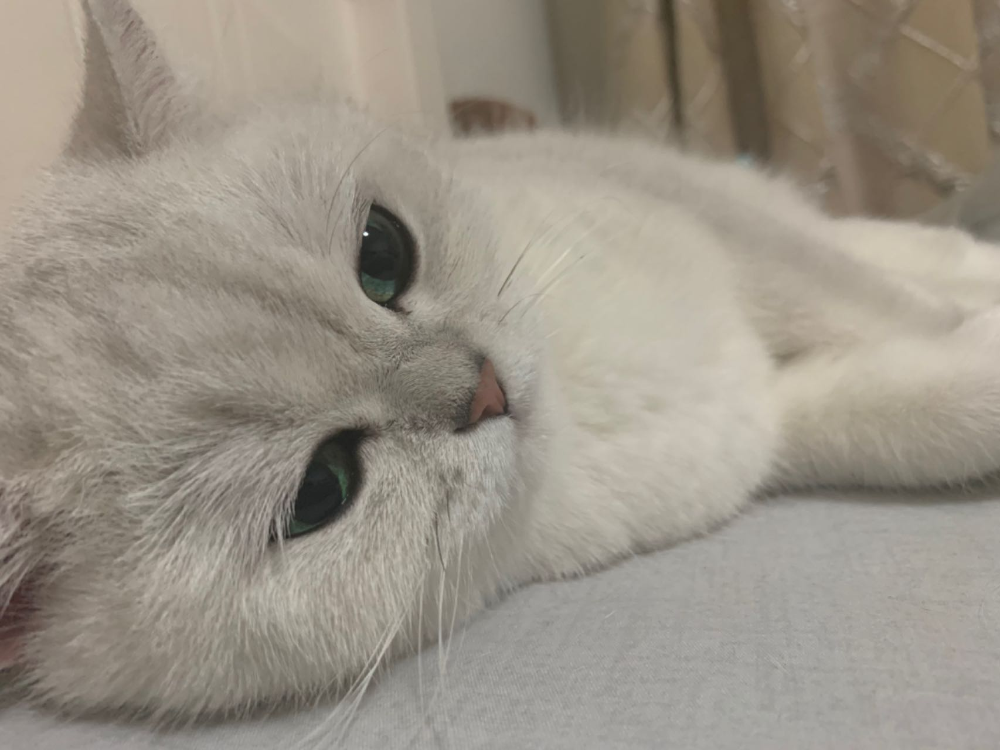
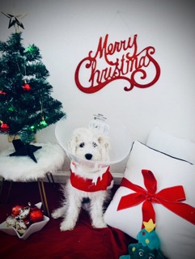
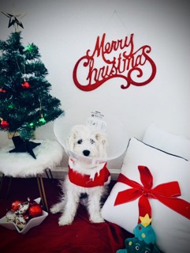

Pets
Pluto

pluto.jpg
Pluto staring at the camera
Pluto is a five year old rescue dog of an unknown breed. He was found wandering alone and taken to the Valley Humane Society where he found his new family. From a young age, Pluto always had a special personality, he was known for being very very lazy! He spends most of his time staring out the window to keep watch of his house. Don't let the laziness fool you because Pluto defends his family from the mailman and squirrels every single day.
Aside from his job as defender of the house, Pluto likes to have fun. Pluto's favorite part of the day is his daily walk. Sometimes he even gets to go to the park and meet his neighbors. He also loves his toy duck, and only his toy duck. As a dog, it's in his nature to hunt and so he makes sure to get some practice with his toy duck.
Photo Gallery


Likes
- Eating his bone
- Going to the beach
- His toy duck
Alexandru Ursu
Miumiu

miumiu.jpg
Silver gradient British shorthair cat in a wedding dress
Miumiu is a five-year-old silver gradient British shorthair cat. She was born in Russia and raised in the United States and China. She is a mom of two babies.
Miumiu is kind of timid and afraid to meet strangers. But she is very close to her family, she loves to lie next to her family. She is very talkative and loves to meow.
Photo Gallery

 


Likes
- Chicken
- Sleeping
- Bird wathching
Alexandru Ursu
Cody

cody.jpg
Cody at home
Cody is a 7yr old Pembroke Corgi. He was born in Cavalier Farms, Seattle. He prefers to spend his days lounging on the bean bag. Every day, he enjoys two walks around the neighborhood and likes to make friends with other doggie friends. If lucky enough, he might see the cyclist, but he is not allowed to give chase.
Cody loves traveling. He enjoys walking on the beach and taking sun naps. But he hates cold weather. He would like to stay at home lounging by the fireplace in winter.
Photo Gallery


Likes
- Travelling
- Lounging
- Tennis balls
Alexandru Ursu
Milo

milo_in_costume.jpeg
Milo dressed as santa
Milo is a high maintenance, lazy dog who prefers lounging over running. His favorite food to eat is Indian food, and he loves anything with chicken in it.
He especially loves chicken, but it must be marinated and seasoned.
Photo Gallery
 



Likes
- Chicken
- Sleeping
- Eating
Alexandru Ursu
Moira

moira.jpg
Black and white pitbull outside next to grass and flowers
Moira is a energetic dog that greets everyone as soon as they come home!
She enjoys playing with her feline sister and running around in the background
Photo Gallery


Likes
- Bike rides
- Dutch-ovening any member of the family
- Playing with her feline sister
Alexandru Ursu